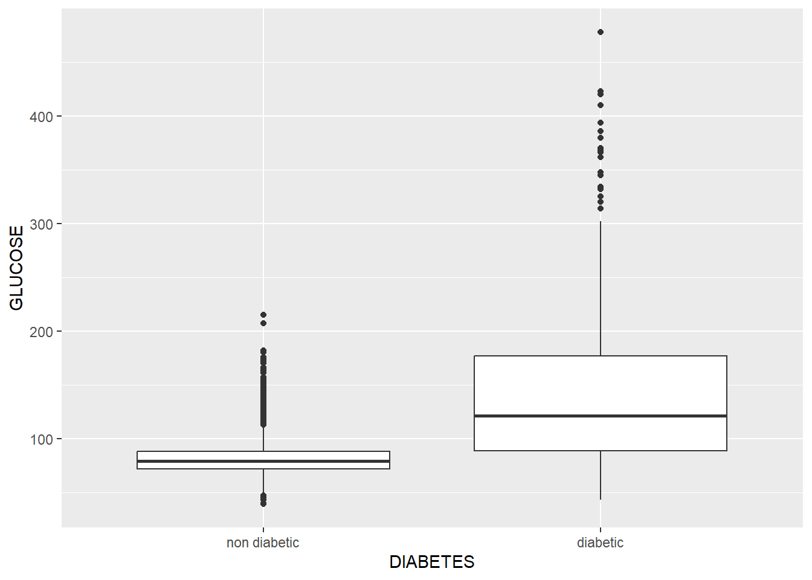

DataAnalysis_finalreport
Having a high glucose concentration increse the risk of having diabetes - the Fringham study
In this study we will evaluate the correlation between glucose values and the risk of diabetes. We will first look at descriptive statistics of glucose in the framingham population such as the mean, the median, the 1st and the 3rd quartile. After this we will make the histogram of the distribution. We will also calculate the 95% interval for the mena of the glucose value. Then we want to analyse, if diabetic have another glucose value thant non-diabetic. Is the ditribution of the glucose value normal ? Is it there is a strong evidence against the null hypothesis ?
Descriptive statistics
In this section, descriptive statistics will be displayed to better understand the risk of glucose on diabetes.
Code
sum(framingham$GLUCOSE)[1] NA[1] 1440[1] 84.12487Code
[1] 0Code
length(sorted_GLU)[1] 10187Code
[1] 80Code
[1] 624.6891Code
var(framingham$GLUCOSE, na.rm = TRUE) [1] 624.6891[1] 24.99378Code
[1] 39 478Code
IQR(framingham$GLUCOSE, na.rm = TRUE) [1] 17Code
summary(framingham$GLUCOSE) Min. 1st Qu. Median Mean 3rd Qu. Max. NA's
39.00 72.00 80.00 84.12 89.00 478.00 1440 Histogram of the distribution of the glucose
Code
ggplot(framingham, aes(x = GLUCOSE)) + geom_histogram(binwidth = 5) +
geom_vline(xintercept = mean_GLUC, colour = "red") + geom_vline(xintercept = median_GLU, colour = "blue")Warning: Removed 1440 rows containing non-finite values (`stat_bin()`).Calculate the 95% confidence interval (CI) for the mean glucose value
Code
mean_GLUC lowerCI_mean_GLU upperCI_mean_GLU
[1,] 84.12487 83.63951 84.61022Gaphical comparison in the glucose value between diabetic and non-diabetic
Code
Warning: Removed 1440 rows containing non-finite values (`stat_boxplot()`).
We can see that value of glucose in non diabetic is lower than the one of the diabetic. There is larger distribution in the diabetic population than in the non diabetic population.
Non-normality
| RANDID | SEX | TOTCHOL | AGE | SYSBP | DIABP | CURSMOKE | CIGPDAY | BMI | DIABETES | BPMEDS | HEARTRTE | GLUCOSE | educ | PREVCHD | PREVAP | PREVMI | PREVSTRK | PREVHYP | TIME | PERIOD | HDLC | LDLC | DEATH | ANGINA | HOSPMI | MI_FCHD | ANYCHD | STROKE | CVD | HYPERTEN | TIMEAP | TIMEMI | TIMEMIFC | TIMECHD | TIMESTRK | TIMECVD | TIMEDTH | TIMEHYP |
|---|---|---|---|---|---|---|---|---|---|---|---|---|---|---|---|---|---|---|---|---|---|---|---|---|---|---|---|---|---|---|---|---|---|---|---|---|---|---|
| 2448 | 1 | 195 | 39 | 106 | 70.0 | 0 | 0 | 26.97 | non diabetic | 0 | 80 | 77 | 4 | 0 | 0 | 0 | 0 | 0 | 0 | 1 | NA | NA | 0 | 0 | 1 | 1 | 1 | 0 | 1 | 0 | 8766 | 6438 | 6438 | 6438 | 8766 | 6438 | 8766 | 8766 |
| 2448 | 1 | 209 | 52 | 121 | 66.0 | 0 | 0 | NA | non diabetic | 0 | 69 | 92 | 4 | 0 | 0 | 0 | 0 | 0 | 4628 | 3 | 31 | 178 | 0 | 0 | 1 | 1 | 1 | 0 | 1 | 0 | 8766 | 6438 | 6438 | 6438 | 8766 | 6438 | 8766 | 8766 |
| 6238 | 2 | 250 | 46 | 121 | 81.0 | 0 | 0 | 28.73 | non diabetic | 0 | 95 | 76 | 2 | 0 | 0 | 0 | 0 | 0 | 0 | 1 | NA | NA | 0 | 0 | 0 | 0 | 0 | 0 | 0 | 0 | 8766 | 8766 | 8766 | 8766 | 8766 | 8766 | 8766 | 8766 |
| 6238 | 2 | 260 | 52 | 105 | 69.5 | 0 | 0 | 29.43 | non diabetic | 0 | 80 | 86 | 2 | 0 | 0 | 0 | 0 | 0 | 2156 | 2 | NA | NA | 0 | 0 | 0 | 0 | 0 | 0 | 0 | 0 | 8766 | 8766 | 8766 | 8766 | 8766 | 8766 | 8766 | 8766 |
| 6238 | 2 | 237 | 58 | 108 | 66.0 | 0 | 0 | 28.50 | non diabetic | 0 | 80 | 71 | 2 | 0 | 0 | 0 | 0 | 0 | 4344 | 3 | 54 | 141 | 0 | 0 | 0 | 0 | 0 | 0 | 0 | 0 | 8766 | 8766 | 8766 | 8766 | 8766 | 8766 | 8766 | 8766 |
Histogram; whole population
Histogram: separation of non-diabetic and diabetic
Code
ggplot(framingham, aes(x = GLUCOSE, fill = DIABETES)) + geom_histogram(binwidth = 5, aes(y = after_stat(density))) +
facet_wrap(~DIABETES)Warning: Removed 1440 rows containing non-finite values (`stat_bin()`).Quantile-quantile plot
This quantile-quantile plot will allow us to assess the alignement and the theorical ligns.
Code
Warning: Removed 1440 rows containing non-finite values (`stat_qq_line()`).Warning: Removed 1440 rows containing non-finite values (`stat_qq()`).We can see that for both population (diabetic and non diabetic), the distribution is not normal. We will run Kolmogorov-Smirnov to see, if the ditribution is normal. (We can see on the graph, that is not the case, but it is in order to use the fonction)
p-Value calculation
Code
ks.test(framingham$GLUCOSE[framingham$DIABETES == "diabetic"], "pnorm")Warning in ks.test.default(framingham$GLUCOSE[framingham$DIABETES ==
"diabetic"], : für den Komogorov-Smirnov-Test sollten keine Bindungen vorhanden
sein
Asymptotic one-sample Kolmogorov-Smirnov test
data: framingham$GLUCOSE[framingham$DIABETES == "diabetic"]
D = 1, p-value < 2.2e-16
alternative hypothesis: two-sidedCode
ks.test(framingham$GLUCOSE[framingham$DIABETES == "non diabetic"], "pnorm")Warning in ks.test.default(framingham$GLUCOSE[framingham$DIABETES == "non
diabetic"], : für den Komogorov-Smirnov-Test sollten keine Bindungen vorhanden
sein
Asymptotic one-sample Kolmogorov-Smirnov test
data: framingham$GLUCOSE[framingham$DIABETES == "non diabetic"]
D = 1, p-value < 2.2e-16
alternative hypothesis: two-sidedFor both population there is a strong evidence against the null hypothesis.
Calculation if the mean glucose value differs between diabetics and non-diabetics
Code
framingham %>%
wilcox_test(GLUCOSE ~ DIABETES) %>%
kable()| .y. | group1 | group2 | n1 | n2 | statistic | p |
|---|---|---|---|---|---|---|
| GLUCOSE | non diabetic | diabetic | 9744 | 443 | 788441.5 | 0 |
The difference between the means of the glucose values shows a strong evidence.
Comparison of the difference betwenn the groups
Code
# A tibble: 2 × 6
DIABETES mean median min max sd
<fct> <dbl> <dbl> <dbl> <dbl> <dbl>
1 non diabetic 81.4 79 39 215 14.8
2 diabetic 144. 121 43 478 76.1We can see that mean and the median of the glucose value is much higher in the population that has diabetes. We can conclude that glucose has an high impact on the diabetes incidence.